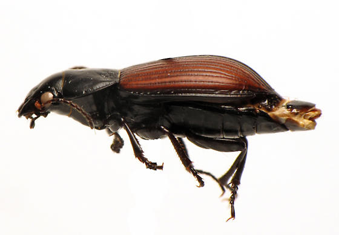
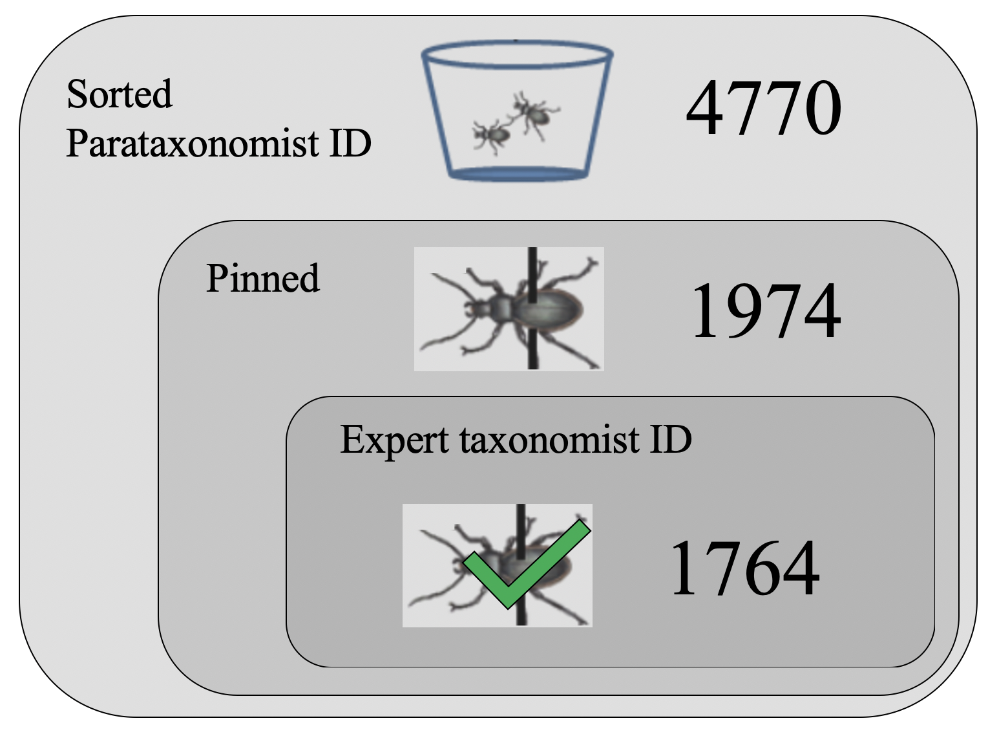
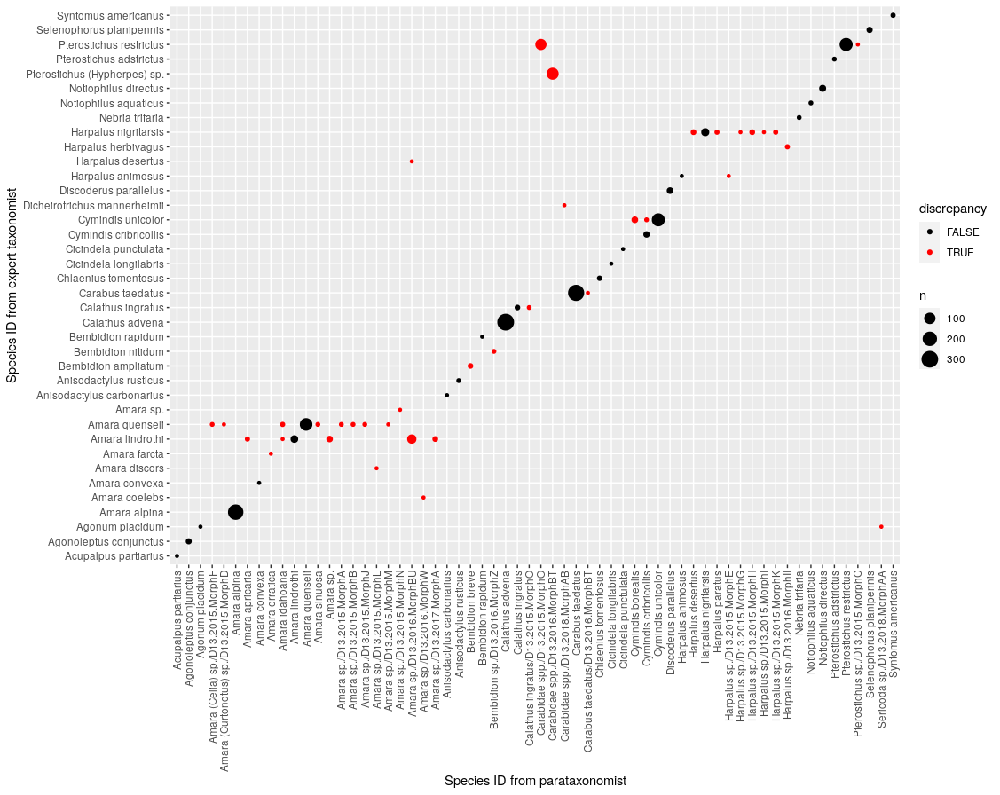

class: center, middle # NEON Carabid Misclassification Project Overview ### Max and Anna with Dr. Royle ### 08-24-2020 <center> </center> <center> </center> ??? Here is where we've gotten thus far Please ask questions throughout! --- # Agenda 1. What are our science questions? 2. What are the data like? 3. What is our model approach? 4. What do our model results look like? 5. What are the takeaways and why is this exciting? --- # What are our science questions? Large-scale, long-term community data collection is important for tracking biodiversity patterns --- # What are our science questions? Large-scale, long-term community data collection is important for tracking biodiversity patterns Error is necessarily part of the collection process --- # What are our science questions? Large-scale, long-term community data collection is important for tracking biodiversity patterns Error is necessarily part of the collection process How can we probabilistically capture identification error in an imperfect species classifier at a large-scale with limited validation data? --- # What are our science questions? Large-scale, long-term community data collection is important for tracking biodiversity patterns Error is necessarily part of the collection process How can we probabilistically capture identification error in an imperfect species classifier at a large-scale with limited validation data? What does the dynamic occupancy model contribute to the misclassification model? --- # What are the data like? ### Site Our focus is on ground beetles (aka carabids) at the NEON Niwot Ridge site <center></center> --- # What are the data like? ### Data processing NEON collects carabids in pitfall traps at every terrestrial site <center></center> --- # What are the data like? ### Data at Niwot Ridge <center><center> ??? Using data from 2015-2018 since lag in expert identifications is 600 days --- # What are the data like? ### Discrepancies in IDs <center></center> ??? high-level visual all individuals that were ID'ed by an expert dot size corresponds to number of individuals red dots are discrepancies between parataxonomist and individual taxonomist IDs --- # What is our model approach? <center> </center> ??? The imperfect classification (y_ijlt) is a random variable controlled by the partially observed true identification (k_ijlt) and the probabilistic categorical distribution of identifications for species k. L_ijt is the total number of indiviuals encountered, driven by the expected encounter rate, lambda, and the true occupancy state, z. The occupancy state is driven by occupancy parameters psi, phi, and gamma.... prob of occupancy, survival, and colonization. --- # What do our model results look like? ### Theta confusion matrix <center></center> --- # What do our model results look like? ### Prior and posterior density for Theta <center> </center> ??? Heat map of posterior differences between two confusion matrices --- # What do our model results look like? ### Prior and posterior density for Theta <center></center> ??? This compares the density plots of theta prior, theta from the full dynamic occupancy model, and theta from the reduced misclass-only model --- # What do our model results look like? ### Prior and posterior density for Theta <center> </center> ??? this figure comapres the differences in precisiion between the full and reduced model compare 95% CI widths (x-axis full, y-axis reduced) We see greater credible interval widths in the full model compared to the corresponding recuded model --- # What do our model results look like? ### Occupancy dynamics <center> </center> --- # What do our model results look like? ### Occupancy dynamics: site-level random effects <center> </center> --- # What do our model results look like? ### Occupancy dynamics: species-level random effects <center> </center> --- # What are the takeaways and why is this exciting? * This contributes to improving identifiability of misclassification models * This probabilistic model is directly helpful for users of NEON carabid data * Unexplored: opportunity to explore limits of model identifiability using simulated data ??? Unexplored... play with the 'percent known species' threshold to understand how much validation we need for model identifiability Notes from meeting - more validation work. try witholding expert IDs - that's cool taht there's increased precision in full occupancy model - slide 15 - change dot size by number of corresponding points - for which species was there an increase in precision? - check out multi-even models from the French